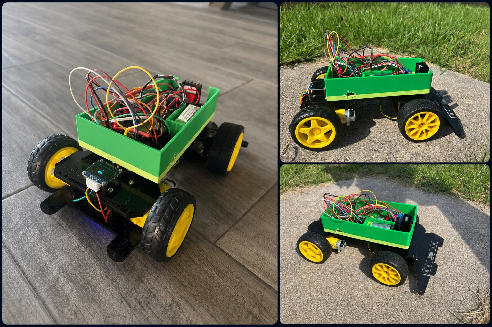
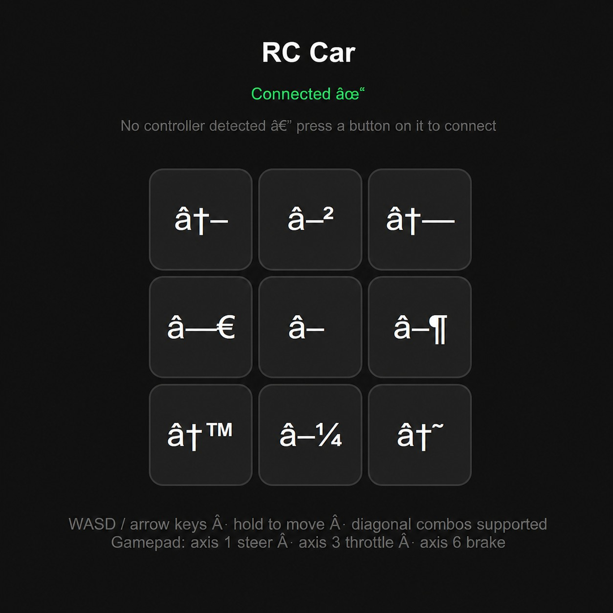
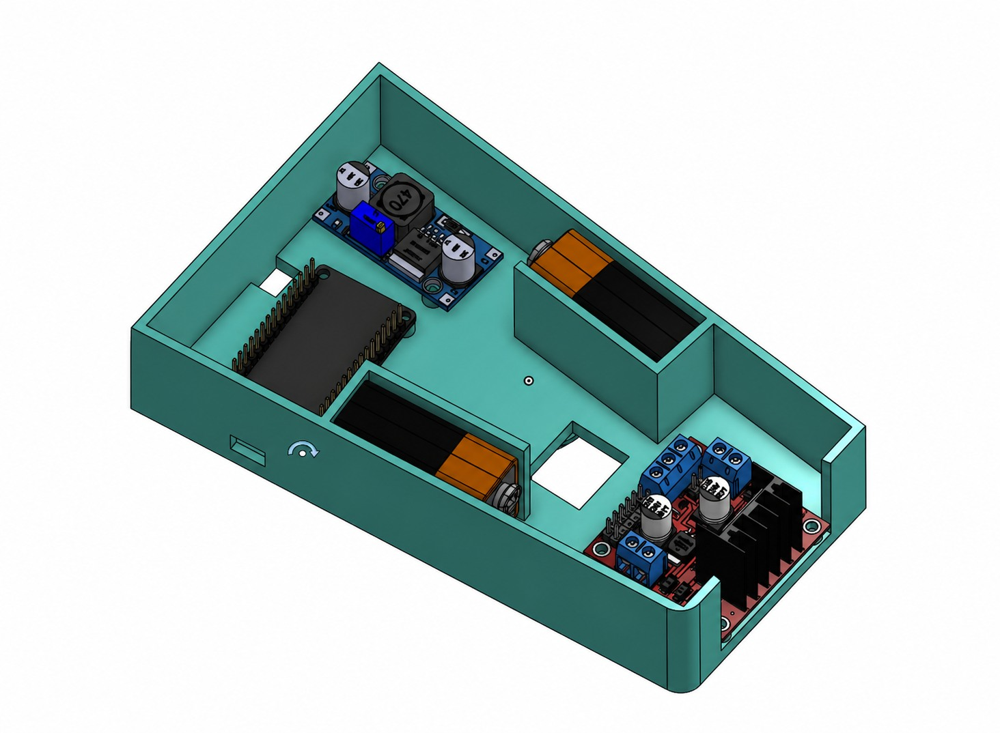

The original robot controller stopped working, so I rebuilt the control system around an ESP32 and successfully powered the drive motor again.

The replacement brain. It runs the web controls and coordinates the car's electronics.

I redesigned the car as a custom, network-controlled robotics platform after its proprietary controller failed. The ESP32 now coordinates the drive motors, steering, display, and status lighting while hosting a low-latency browser controller over WebSockets.
Removed the failed factory receiver, wired an ESP32 to dual H-bridge drivers, and brought the drive motor back to life.
Built a local web server with full-duplex WebSocket controls for responsive, multi-key driving from a custom browser dashboard.

Designed and 3D-printed the green electronics enclosure, packaging the battery, motor drivers, wiring, ventilation, OLED telemetry screen, and status LEDs into the chassis.

During this engineering project, I designed and built an internet-connected display system using an ESP32-M4 Matrix Portal than upgraded to ESP32-S3 Matrix Portal to fetch and showcase real-time game data. Programming in CircuitPython, I configured the microcontroller to set up Wi-Fi connections, pull live data through web APIs, and manage communication protocols between multiple ESP32 boards to transmit information smoothly across the system.
When hardware limitations affected performance, I created custom memory cleanup routines to improve the codebase. This ensured the data refreshed smoothly without crashing the system's limited RAM. I also faced a major setback when the wrong hardware components arrived. Instead of waiting for replacements, I reverse-engineered the pinouts and adjusted my wiring to make the existing parts work together.
To complete the project, I treated it like an open-source product. I built a dedicated website with information on the parts that I got and a whole tab that gave everyone the code that I created, allowing others to be able to create the same project that I created. I also demoed my project to a group of people to get people more interested in creating a product like mine.


My name is Steven Xu, and I am a high school student with a deep passion for hardware engineering, software development, and robotics. Over the years, my fascination with microcontrollers has driven me to design and build numerous custom devices, bridging the gap between hardware and software. This love for hands-on creation led me to join FRC Robotics Team Pearadox 5414, where I honed essential industry skills including CAD, iterative design, thorough documentation, and practical engineering principles. I also enjoy making games, as it allows me to use my mind to create and communicate with others to be able to release fun and engaging games.
My technical portfolio spans both physical and digital realms. On the hardware side, I have engineered a 32x64 LED matrix display that fetches and renders real-time API data, designed and CAD-modeled custom enclosures for RC vehicles, and built a webcam that tracks your face with 2 DOF through AI. Learning about joints and tracking, I then built a 5-DOF robotic arm—a project that required extensive prototyping and optimization to build and operate at a high level. These projects were all created using a 3d printer, which is something that I have spent countless hours fixing and upgrading so that I can get the fastest and best prints. Complementing my hardware experience is a strong software foundation in Python, Java, C++, and GDScript, which I also leverage to build engaging games that connect people in game jams and hackathons. Along with these games, I use coding to optimize measuring volunteering hours in my volunteer organization using web dev and cloud automation.
Outside of my technical pursuits, I am dedicated to community service and leadership. In my role as President of the We Care Act Pearland branch, I coordinate student-driven musical showcases for residents at local senior centers. Drawing on over a decade of guitar experience and five years in the school band, I leverage my musical background to drive charitable initiatives, raise vital support for Alzheimer's research, and foster meaningful connections through performance. Along with music, I enjoy going into the outdoors and fishing with friends and family, allowing me to better connect with people and make new memories.